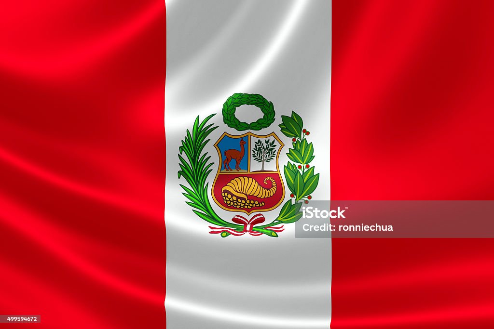

Un país multicultural, lleno de tradiciones, una laureada gastronomía y vastas reservas naturales. Posee 12 patrimonios mundiales reconocidos por Unesco y es dueño de 84 de las 117 zonas de vida que existen en el mundo.
nancy.martinezfl1@com
Pagina 1